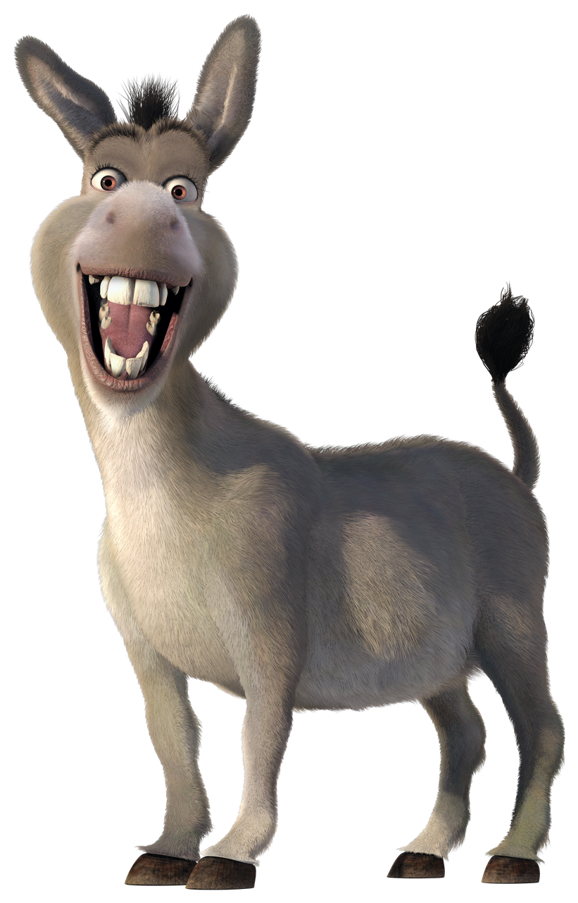

Static Positioning

"Ogers are like onions... "
and so is static postioning!
"Why?" I hear you ask... because they all have layers!
.... yes.... cakes have layers too.
Static positioning is simply layers on a website that start from top to bottom. If you put a red layer at the top, nothing else goes into that layer. If you add another layer, it will automatically go underneath the red layer. This all works together to make a very tasty looking webpage... if you like layers ;p
Relative Positioning
Absolute Positioning
Fixed Positioning
Imagine you have a sticky note stuck to your screen. If you scroll with your mouse, does it move? No.
An image or other element such as a navigaion bar can have fixed postitioning. This means that even if you scroll, it will stay in the same place. The position of the element is based on your window and will stay in the same spot in your window.
See donkey to the side by the scroll bar? He is an example of a fixed element.
